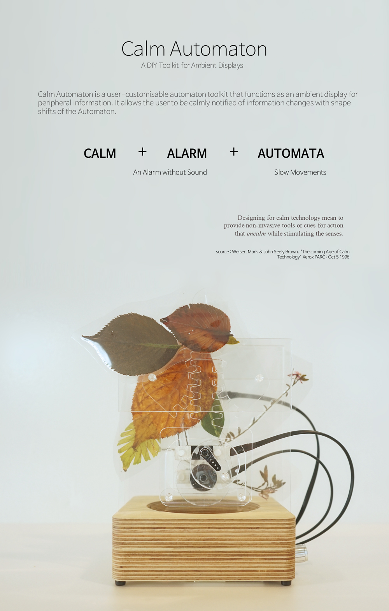
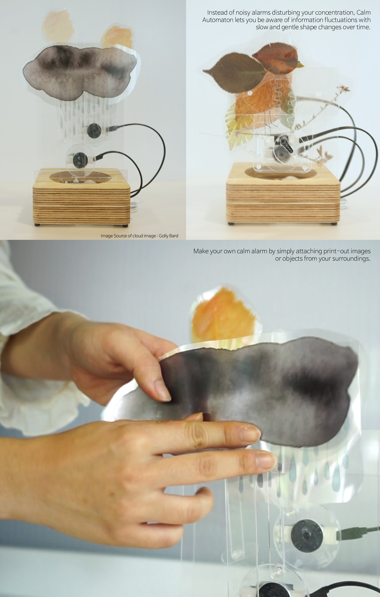
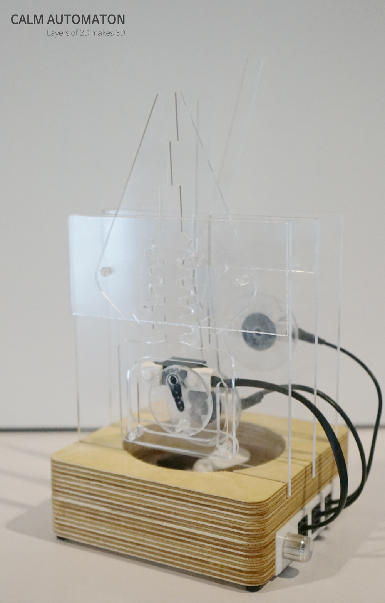
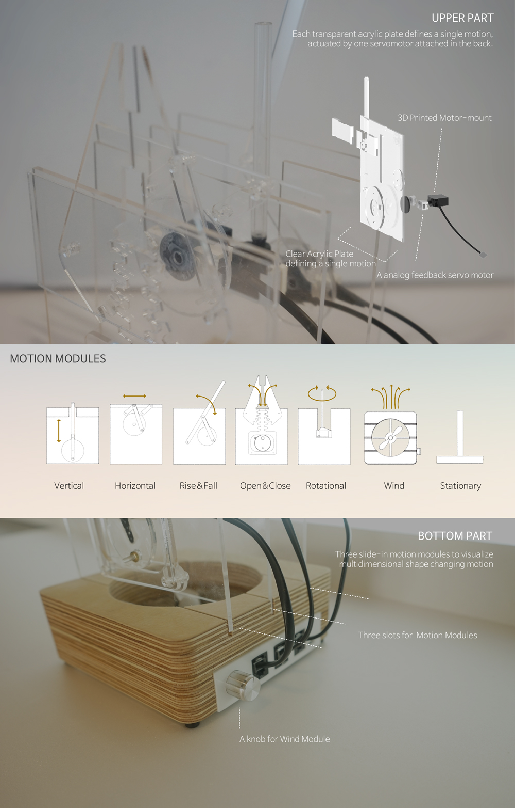

Ratchair
RatChair a strategy for displacing big objects by attaching relatively small vibration sources. After learning how several random bursts of vibration affect its pose, an optimization algorithm discovers the optimal sequence of vibration patterns required to (slowly but surely) move the object to a specified position.
Calm x Automaton x Alarm
Instead of noisy alarms disturbing your concentration, Calm Automaton lets you be aware of information fluctuations with slow and gentle shape changes over time.
Customization
Users can make their own calm alarm by simply attaching print-out images or objects from your surroundings. Each transparent acrylic plate defines a single motion, actuated by one servomotor attached in the back.
Prototype Design
Layers of 2D acrylic plates achieves 3D motion insired from the automata example in theatric play.
Motion Modules
Six acrylic motion modules with one stationary module are included in the toolkit and users may combine at most three motion modules to visualize multidimensional shape changes. Without any professional engineering knowledge, it allows users to tangibly link internet information and visualize in their desired way.